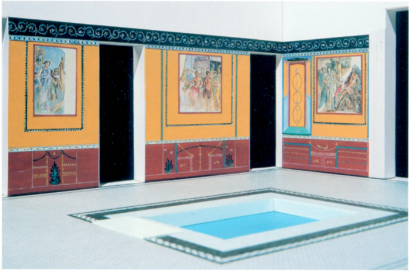
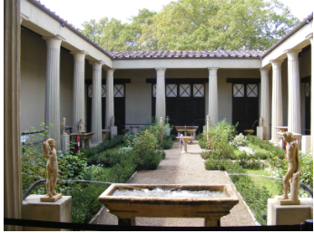
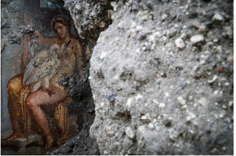

Housing
Andrew Wallace-Hadrill has stratified the Pompeian domus into four distinct types based on size, architecture and function. The first class of domus is the lofty multi-atria homes of the elite and richest of the plebs media. Examples of this style of domus include the House of the Vettii and the House of the Tragic Poet. These domus typically featured extravagant frescoes and mosaics as a display of wealth and class. The second class of domus is the average Pompeian house. While these domus were typically more modest than those of the elite they still reflected the competitive nature of pompeian society as they featured a decorated atrium, tablinum and peristyle. The third and fourth class of domus refer to workshops integrated into a residential setting. While some of these workshops did feature two to seven rooms on the bottom floor, smaller residences only featured one to two. While the domus was the most prevalent form of housing within Pompeii, archaeologists have also discovered cenacula (apartments), terraced houses and small one roomed flats, presumably for the plebs humilis and newly emancipated libertus and libertu (freedmen and freedwomen). Despite the divide between the domus of the elite and even that of the average Pompeian, insula were not segmented based on class, instead they were a melting pot of different businesses and housing. This is made apparent when analysing the location of the House of the Vettii. Pamela Bradley describes the domus as ‘one of the most luxurious houses in Pompeii’, yet it is located in a backstreet with a facade lined with shops. This reveals to historians that while levels of wealth inequality did exist, demonstrated by the divide in housing, different classes of people were able to mix freely within society (an exception of course been servi/slaves). In fact Pompeii was, as described by Miko Flohr, ‘a highly competitive society’, so it makes sense that the wealthy were not hated but instead envied.

Source 1: Exterior of the House of the Tragic Poet
Source 1 shows the entrance to the House of the Tragic Poet. As shown in the source, houses in Pompeii were often built onto the raised pavement of the street. Many of the domus in Pompeii adopted an unassuming exterior as the houses were designed to face inward towards the atrium. Because of compluvium and peristyle, we can assume the structures often lacked or had little windows at the front due to the light let in by these fixtures, as well as to retain privacy. Like the House of the Tragic Poet, many featured red tilted roofs with a slight gradient. The interior of the Pompeian domus is often characterised by the presence of an atrium and peristyle. These rooms, especially the atrium, functioned as the show pieces of the house, with Bradkey describing the interior of the domus as ‘meant to be seen’.
Source 2: Digital reconstruction of atrium in the House of the Tragic Poet
The atrium is a reflection of the socio political environment encompassing Pompeii, as well as a window into more everyday business and Pompeian culture. Bradley describes the atrium as ‘decorated with bright paintings and decorative architectural pieces.’ This is strongly supported by source 2, showing a digital reconstruction of the atrium in the House of the Tragic Poet. As shown in source 2 the room was adorned in red and yellow whilst showing mosicas and an impluvium. The impluvium (central pool for water to collect) and accompanying compluvium (square opening in roof above impluvium) were quite common as August Mau describes atria covered completely by roof as ‘extremely rare’. But how does the atrium reflect Pompeian socio political environment? Miko Flor describes the atrium as ‘Thought to be the place where, early in the morning, the male head of the house received clients.’. Flor goes on to describe Pompeii as a ‘highly competitive society’, stating that ‘everyone did what he could to show himself… ready for social responsibility and political office.’. When viewed through this lens the elaborate nature of the atrium becomes justifiable for Pompeii’s elite and any plebs media who also assumed the role of pateron. Patron refers to the host of the aforementioned morning routine. However viewing the atria form such a narrow perspective fails to explain its presents in more well to do households. Work by Penelope Allison suggests that the atrium was also a place where more utilitarian activities were performed, as Bradley describes ‘demonestic objects found in atria such as glass and pottery jars, loom weights and wall fixtures’. These differences in interpretation reveal that, assuming both to be correct, that the atrium or atria represented a dynamic space within the household that was changed and adapted based on need or even time of day. Mau describes the peristyle as ‘a garden enclosed by a colonnade, or having a colonnade on two or three sides’, as shown in source 3. The impressive peristyle in the House of the Vettii, features a complex network of fountains, similar to the Greek water gardens that began appearing around the second century B.C.
Source 3: Peristyle in the House of the Vettii
The domus also featured smaller rooms referred to as cubicula. Bradley speculates that these rooms are ‘generally thought to have been rooms for sleeping’. While these rooms were small they were home to frescoes and mosaics. Source 4 shows an erotic fresco in a cubicula. The fresco depicts Leda, Queen of Sparta, and Jupipter disguised as a swan. The fresco alludes to Homer's iliad as their coupling would result in the birth of Helen of Troy. To archaeologists and historians the fresco reveals both an interest in Greek culture at Pompeii as well as differing standards for what was socially acceptable at the time.
Source 4: Etrotic fresco in cubicula
While today the kitchen is often considered the heart of the household and takes a focal point in modern architecture, the kitchen or culina is described by Mau as ‘generally a small room’. We can attribute this to the social hierarchy in Rome and Pompeii. In these societies it was expected that the servi (slaves) would prepare food. Bradley describes the culina as containing ‘a stone hearth with podium and recess for firewood or charcoal’.